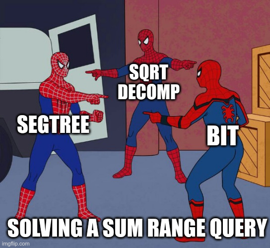
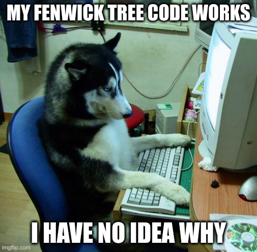

Class #05 · Cumulative sums and Fenwick trees (BITs)
Main learning outcomes for this class
Cumulative sums
- I know the concept of cumulative sums ("prefix sums")
- I know the inclusion-exclusion principle and how to extend cumulative sums to more than one dimension
Fenwick trees (Binary Indexed Trees, a.k.a. BITs)
- I know the concept of a BIT, the way nodes store cumulative sums and its (simple) implementation
- I know how to answer several types of queries related with sums, such as single updates, range queries [range(a,b) using bit(b)-bit(a-1)], range updates, single queries [update(a,b,v) using update(a,v) and update(b+1,-v)] and range updates, range queries [using two BITs]
- I understand how to adapt to more dimensions, and in particular to the case of 2D (a BIT of BITs)
Maximum subarray problem
- I know the problem of determining maximum sum of a contiguous subsequence
- I know Kadane's Algorithm to solve this problem in linear time
Study material
- 1D Problems II: cumulative sums and Fenwick trees (my own video from the Topics in Advanced Algorithms course) Video
Cumulative sums
BITs
Kadane's Algorithm
Initiation/reinforcement problems
Some (easy) problem suggestions if you want to more directly test your knowledge on the topics of this class.
I want my memes!
😁 Which data structure?

😁 BIT Implementation

Content by Pedro Ribeiro (DCC/FCUP), migrated from www.dcc.fc.up.pt/~pribeiro/aulas/pc2627/week05.html to demonstrate the UC Design Kit.